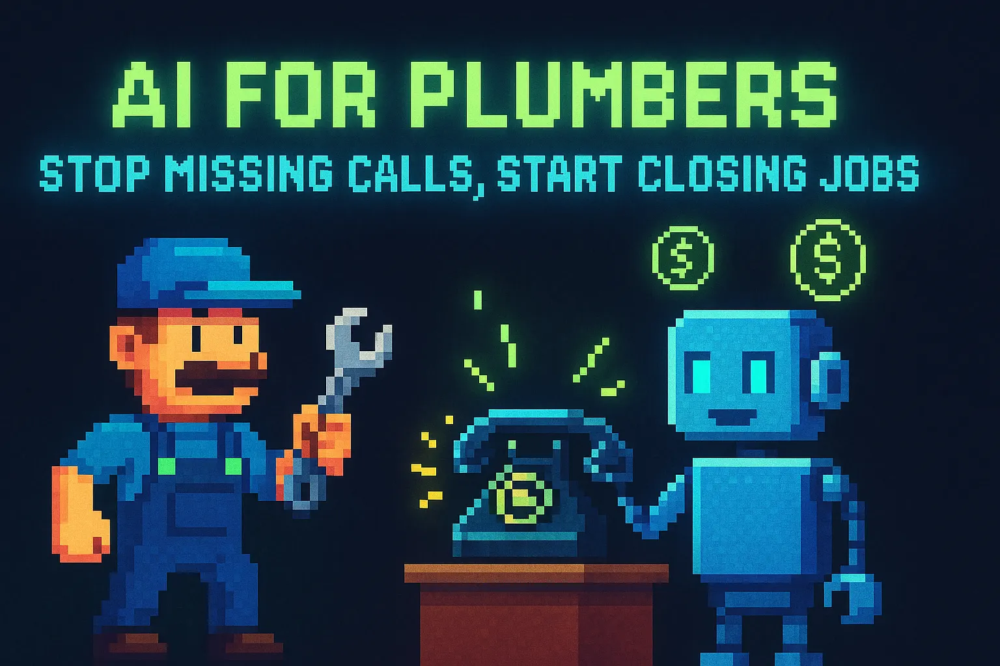
INDUSTRY GUIDE6 MIN READ
Plumbers: Sort Burst Pipes From Drips After Hours
How an after-hours triage system tells a plumbing emergency from a morning job, books it, alerts the on-call tech and queues the rest.
▶ READ ARTICLEPractical guides, case notes, and automation lessons for small businesses that want to move faster.

How an after-hours triage system tells a plumbing emergency from a morning job, books it, alerts the on-call tech and queues the rest.
▶ READ ARTICLE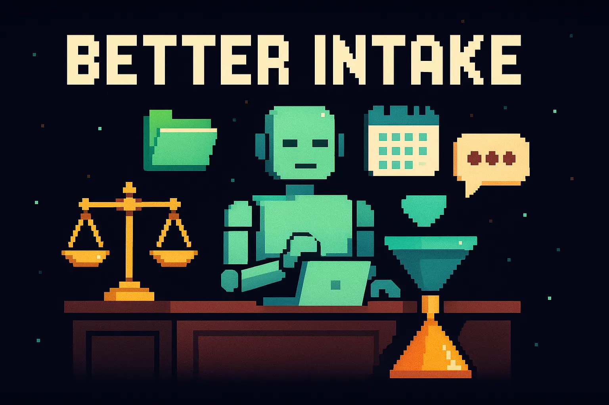
Small firms near the Cobb County courthouse lose inquiries after five. Here is how to capture intake and book consults without adding front-desk staff.
▶ READ ARTICLE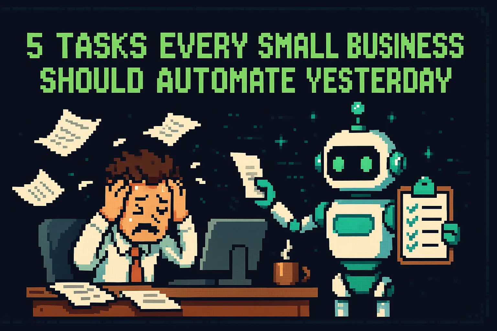
A plain-English look at MCP connectors: how an AI tool gets permission to read and act in your software, what scopes mean, and habits that keep you safe.
▶ READ ARTICLE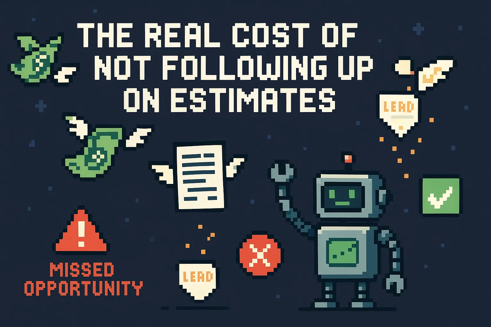
Estimate follow-up, review requests, stale-deal nudges and a Monday summary should run unattended. Here is where each one belongs.
▶ READ ARTICLEConfirm showings, reschedule by text and follow up with every open-house sign-in automatically, so you spend your time on buyers ready to move.
▶ READ ARTICLE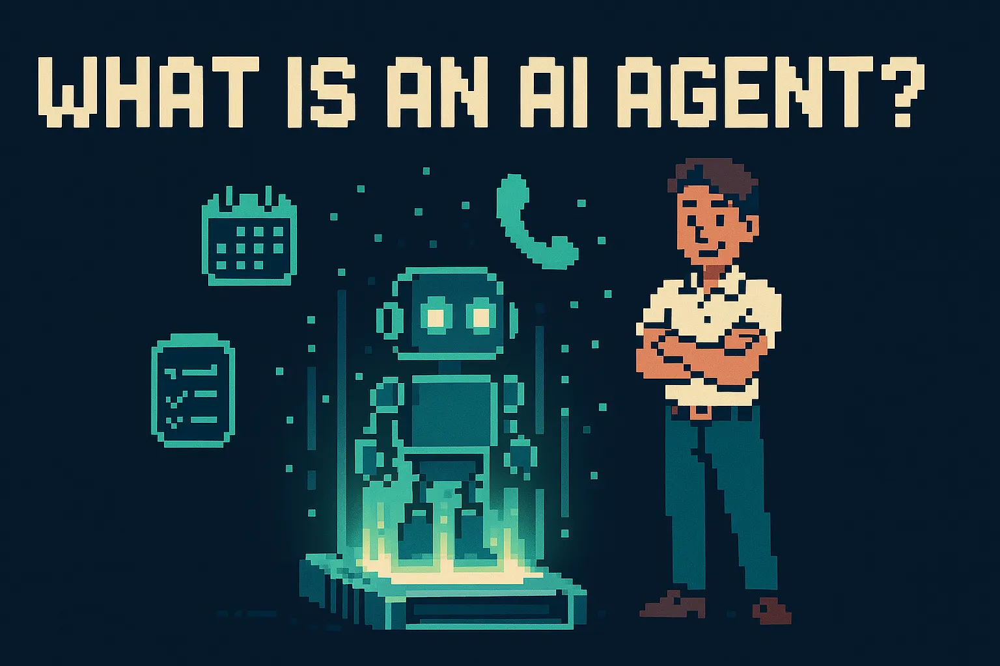
A plain guide to what Claude handles in a chat window, what needs a server behind it, and how to decide which one your next task needs.
▶ READ ARTICLE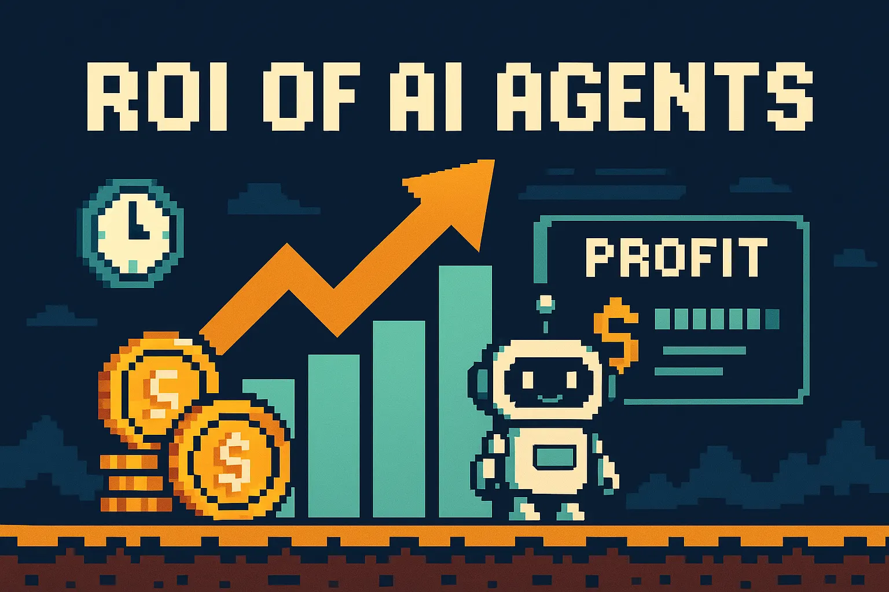
How to turn HighLevel CRM data into a plain-English weekly report and simple dashboard that answer the questions owners actually ask.
▶ READ ARTICLEWhat an after-hours intake system at a small firm should collect, what it must never say, and how it hands each caller to a real person.
▶ READ ARTICLE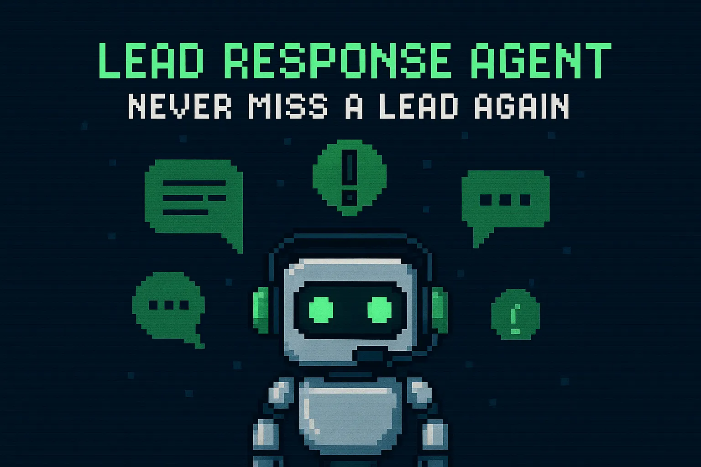
Before you buy an AI receptionist, pin down which calls it takes, when it hands off, how it books, what it says after hours, and how you test it.
▶ READ ARTICLEClaude connected to HighLevel makes lookups and drafts fast. Here is what a chat session does well and what still needs a scheduled system.
▶ READ ARTICLEMoving customers request quotes from several movers at once. Here is how McDonough movers can turn that request into a booked move date first.
▶ READ ARTICLEPool crews in Peachtree City can't answer calls from the deck. Here is how to answer, quote and book while the route keeps moving.
▶ READ ARTICLE
What AI automation actually does for an Atlanta-metro service business, which system to build first, and how to tell a real build from a chatbot sold as one.
▶ READ ARTICLE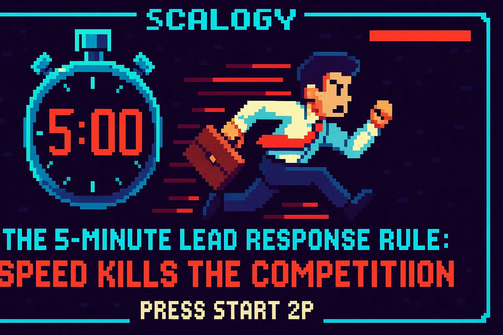
When a heat wave hits Fayette, Henry, Clayton and Coweta counties, HVAC phones ring faster than anyone can answer. Here is how AI lead response keeps those calls from going to the next company.
▶ READ ARTICLEAfter a spring hailstorm moves through the Atlanta metro, every homeowner calls three roofers. The one who responds and books the inspection first gets the job. Here's how to be that roofer.
▶ READ ARTICLEDental, chiropractic, therapy and medical practices around Fayetteville, Peachtree City and Newnan lose real revenue to no-shows and unanswered calls. Automated scheduling and reminders fix both.
▶ READ ARTICLE
Cleaning, landscaping, pool and remodeling companies in Cobb, Gwinnett and North Fulton send plenty of quotes. The ones that close are the ones that get followed up. Here's how to automate that.
▶ READ ARTICLEA plain-English explanation of AI agents, what they do, and why they are more useful than a chatbot for real business operations.
▶ READ ARTICLEThe five highest-value tasks that almost every small business is still doing manually, plus the fastest path to automate them.
▶ READ ARTICLE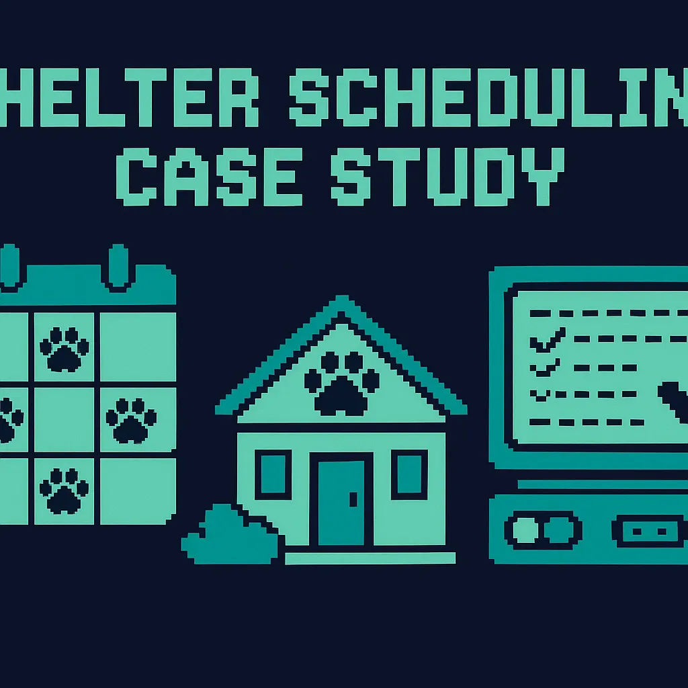
A behind-the-scenes breakdown of the Clio Animal Shelter scheduling platform and the evolution from spreadsheet chaos to software.
▶ READ ARTICLEWhy plumbing businesses lose revenue to slow response times and how AI agents can help capture more jobs.
▶ READ ARTICLEA look at how much revenue small businesses lose when estimates go cold - and how to fix it.
▶ READ ARTICLEThe businesses adopting AI agents first are replying faster, booking more calls, and quietly widening the gap. If your leads are still hitting voicemail, the market is already voting.
▶ READ ARTICLEA fast lead response system is not magic. It is a workflow. Here is how an AI lead response agent captures, qualifies, routes, and follows up on inquiries before they go cold.
▶ READ ARTICLEWhen the weather swings, call volume explodes. AI agents help HVAC companies triage demand, book jobs faster, and keep maintenance revenue moving without adding office chaos.
▶ READ ARTICLE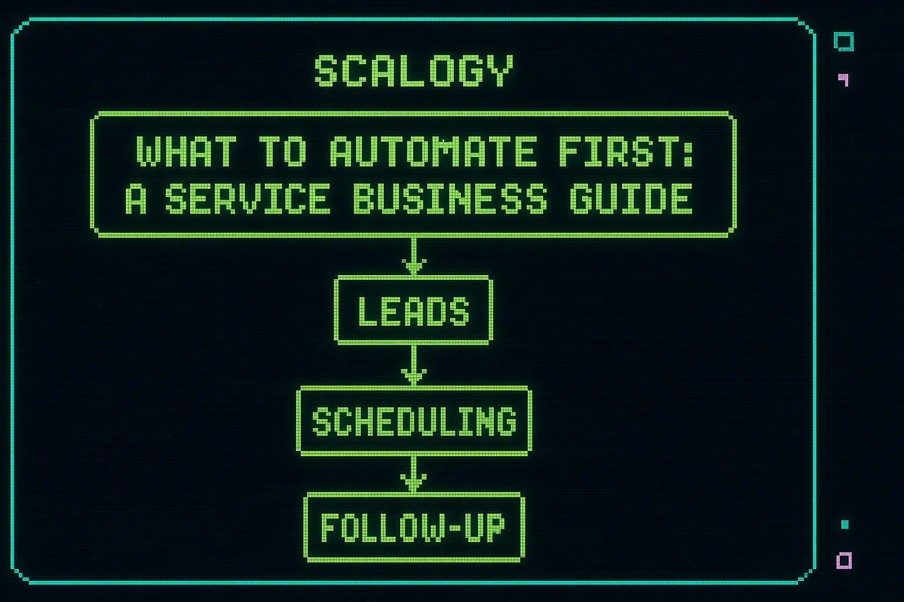
Before you add payroll, fix the workflows that are already leaking leads and time. Lead response, scheduling, and follow-up should be automated before you hire into chaos.
▶ READ ARTICLEJason was burning hours in spreadsheets just to decide which deals deserved attention. Then an AI analysis agent took over the repetitive math, comparison, and screening work.
▶ READ ARTICLE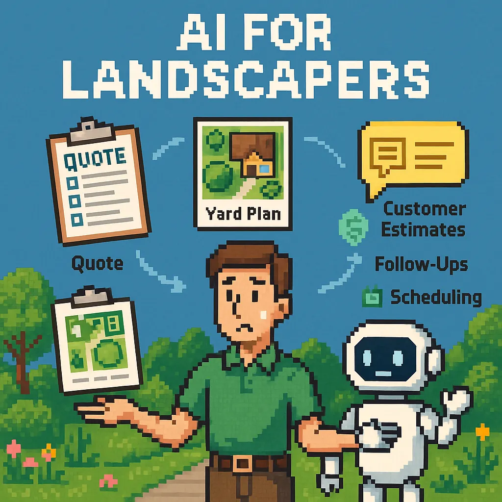
Landscaping businesses lose work in the gap between estimate requests, quote delivery, and follow-up. AI agents close that gap before seasonal demand turns into an estimate graveyard.
▶ READ ARTICLELead response speed is no longer a nice-to-have. Here is why the under-5-minute window matters so much and how AI agents make fast response the default instead of the exception.
▶ READ ARTICLEMost owners do not ignore follow-up on purpose. They just do not have a system. That gap quietly kills deals, and the fix is far simpler than most people imagine.
▶ READ ARTICLEFor plumbers, HVAC companies, electricians, roofers, and landscapers, the most useful AI agents are not mysterious. Three types matter most, and each solves a very practical bottleneck.
▶ READ ARTICLEMost automation disappoints for the same reason: businesses automate the wrong thing, at the wrong level, with the wrong expectations. Here is what good automation actually looks like.
▶ READ ARTICLEThe return on AI agents is usually easier to calculate than people think. Time saved, labor leverage, and conversion gains create a very practical ROI story when you use real numbers.
▶ READ ARTICLEBoth can save you time, but they solve very different problems. If you pick the wrong one, you do not get leverage - you just buy a more expensive headache.
▶ READ ARTICLE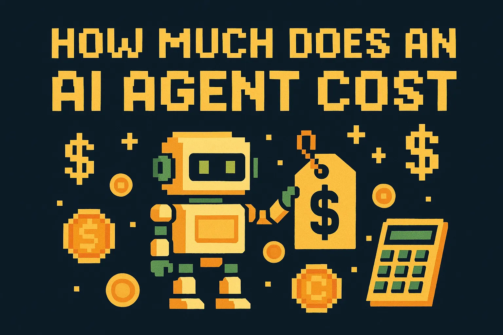
The price of an AI agent depends less on hype and more on the job you need it to do. Here is what small businesses should expect, what drives cost, and how to tell if the math actually works.
▶ READ ARTICLE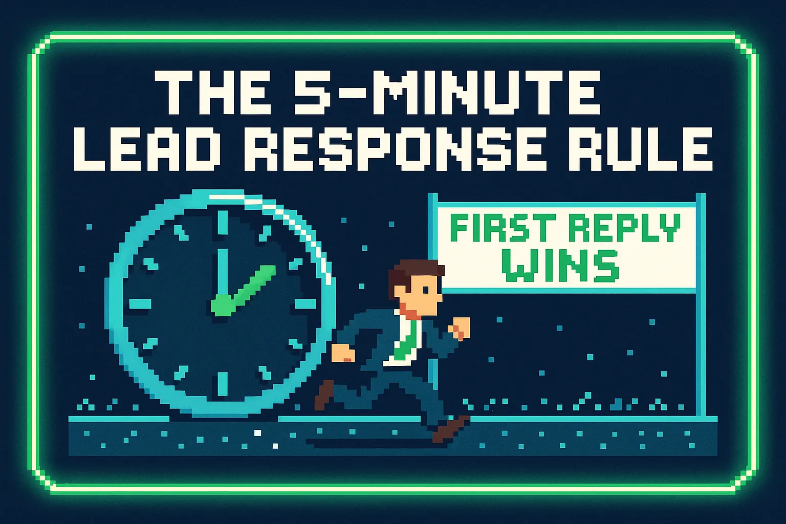
The business that responds first usually gets the conversation, the trust, and the sale. If your lead response takes hours, you are not competing - you are spectating.
▶ READ ARTICLEIf you try to automate everything at once, you usually automate chaos. Start with the work that is repetitive, urgent, and tied closest to revenue.
▶ READ ARTICLEVoicemail feels normal, but for many service businesses it is just a polite revenue graveyard. If your calls go unanswered, a chunk of those customers never come back.
▶ READ ARTICLEInsurance agencies do not usually lose business because they lack expertise. They lose it because follow-up is slow, documents bounce around, and renewal opportunities slip through the cracks. AI agents help tighten the operation without adding more admin chaos.
▶ READ ARTICLE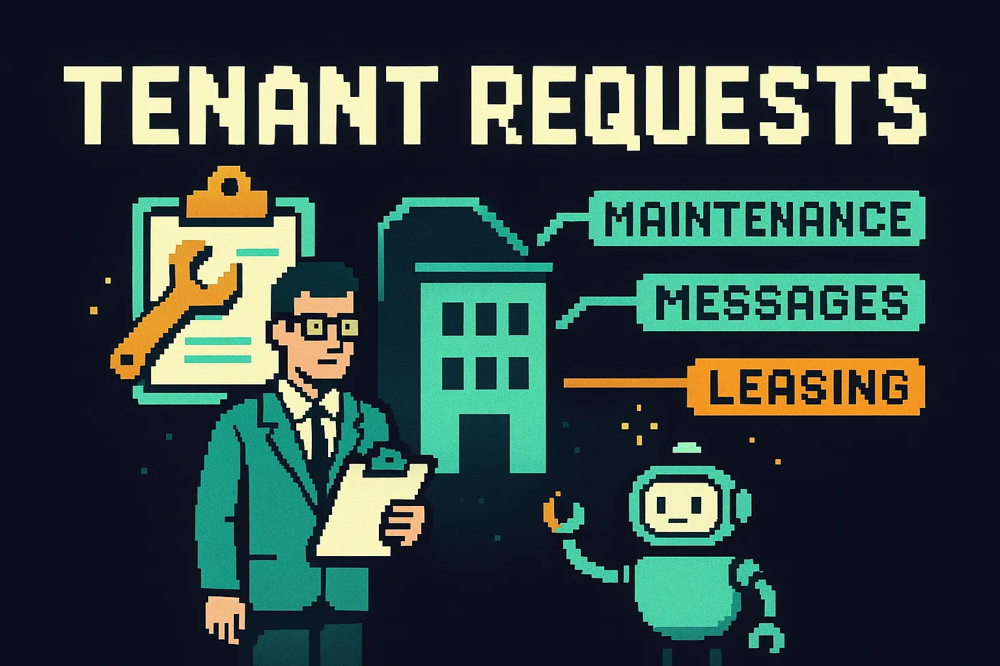
Property management is operational whiplash: tenant messages, maintenance coordination, owner updates, leasing inquiries, and constant follow-up. AI agents help property managers respond faster, route issues correctly, and stop living in inbox purgatory.
▶ READ ARTICLEMany law firms lose potential clients before an attorney ever has a real conversation with them. AI agents can improve intake, qualify matters faster, and keep consultations from slipping through the cracks without replacing legal judgment.
▶ READ ARTICLE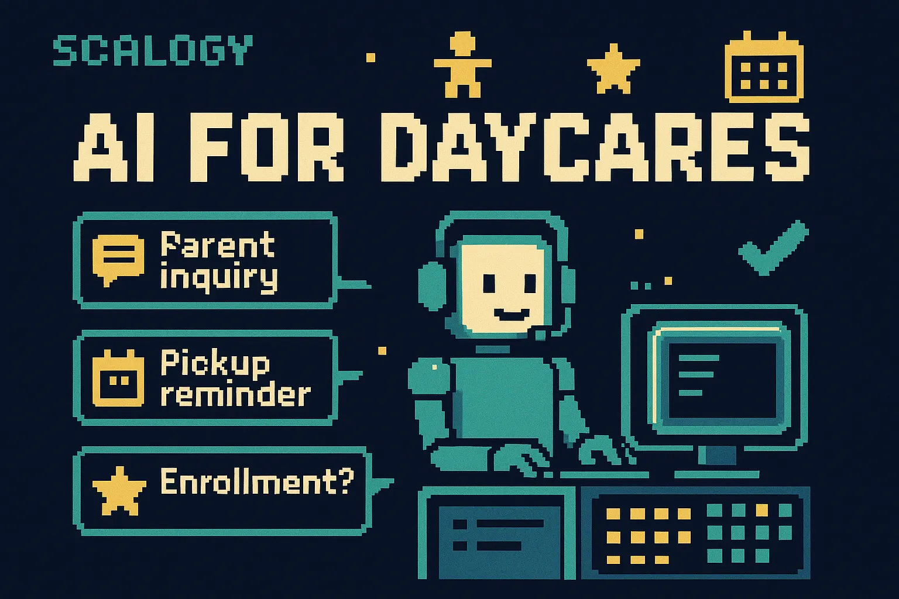
Daycare operators juggle parent inquiries, tour scheduling, waitlists, paperwork, reminders, and constant interruptions. AI agents help daycares respond faster and stay organized without turning the front desk into a bottleneck.
▶ READ ARTICLE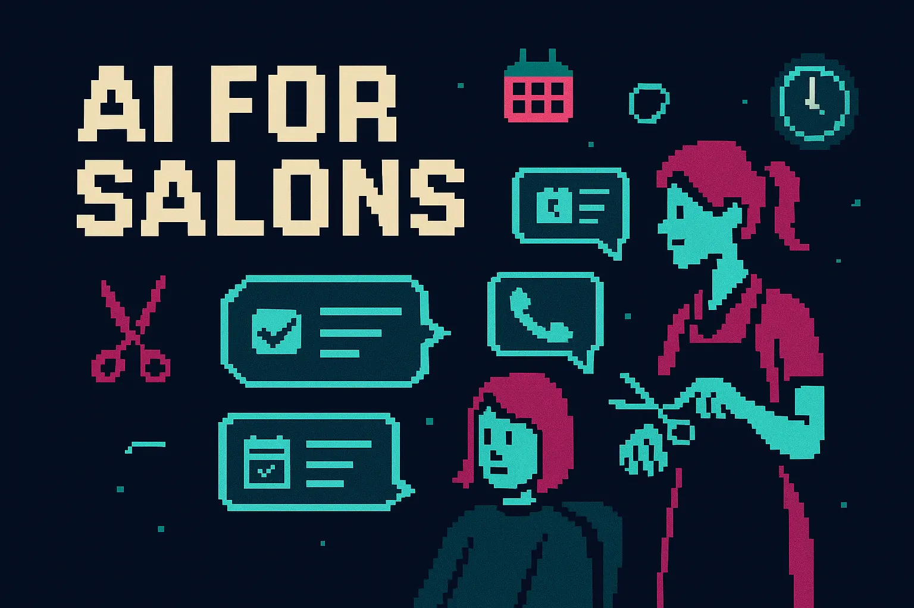
Salons run on calendars, client communication, and repeat business. AI agents help salons reply faster, fill schedules more efficiently, send reminders automatically, and reduce the admin work that steals time from actual service.
▶ READ ARTICLEInsurance agencies lose too many policies in the gap between quote request and human follow-up. AI agents close that gap by responding instantly, qualifying the prospect, and keeping the quote moving until bind.
▶ READ ARTICLEA practical look at how service businesses are using AI automation in 2026 to book more jobs, reduce admin load, and stop losing revenue to slow follow-up.
▶ READ ARTICLEA plain-English buyer's guide to AI receptionists for small businesses: what they actually do, what they cost in 2026, how they compare with voicemail and answering services, and a six-step setup that holds up on real calls.
▶ READ ARTICLEStop wasting hours on tire-kickers. Learn how AI qualification filters bad leads, scores intent, and routes the right prospects to the right person.
▶ READ ARTICLEFor local businesses, Google reviews often influence buying decisions faster than a website. Learn how AI can automate the review engine without sounding fake.
▶ READ ARTICLEA blunt breakdown of what AI actually does well for small businesses in 2026, and what is still mostly marketing smoke.
▶ READ ARTICLEAfter-hours calls are where small businesses leak revenue. Learn how AI agents respond, triage emergencies, and keep customers moving until morning.
▶ READ ARTICLESee how AI can move a job from estimate request to invoice and payment without all the manual chasing in between.
▶ READ ARTICLEA practical self-check for owners who want to know whether AI automation makes sense now or should wait until the business is ready.
▶ READ ARTICLEA practical before-and-after case study showing how an AI workflow helped a pest control company answer faster, follow up better, and book more jobs.
▶ READ ARTICLEDental practices lose thousands a month to no-shows and missed recall. AI agents fix both by automating confirmations, waitlist fills, and reactivation outreach.
▶ READ ARTICLEGyms and fitness studios lose members to silence, not competition. AI agents keep members engaged, fill empty class spots, and catch cancellations before they happen.
▶ READ ARTICLEYou do not need a new CRM to fix broken follow-up. AI agents layer on top of your existing tools and make sure no lead goes cold.
▶ READ ARTICLESouth Florida small businesses face rising labor costs, fierce competition, and seasonal swings. AI automation is how the smartest operators are staying ahead.
▶ READ ARTICLEIf your team is drowning in manual work and leads are slipping through the cracks, these five signs mean it is time to automate.
▶ READ ARTICLEMost pressure washing leads go cold in under 10 minutes. Here's how to respond fast enough to actually win the job.
▶ READ ARTICLEMost painting contractors lose jobs not because their price was wrong, but because they stopped following up. Here's the system that fixes that.
▶ READ ARTICLETax season shouldn't mean 60-hour weeks chasing documents. Here's how accounting firms are using AI agents to handle intake without adding staff.
▶ READ ARTICLEMost financial advisors waste hours on leads that were never going to convert. Here's how AI qualification changes that — without replacing the human relationship.
▶ READ ARTICLEMost restaurants are losing bookings, missing reviews, and burning staff hours on tasks a well-configured AI handles in seconds. Here's what to fix first.
▶ READ ARTICLEEvery hour a quote sits unanswered, a customer calls your competitor. Here's how to close faster without adding staff.
▶ READ ARTICLENo-shows cost the average vet clinic $800–$1,200 a week. Here's the exact reminder sequence that fixes it.
▶ READ ARTICLEPatient reactivation software for chiropractors: how to segment lapsed patients, the 3-touch sequence that gets responses, and how to set it up without IT.
▶ READ ARTICLEMost tutoring center owners spend 10+ hours a week on scheduling and parent messages. Here's how to cut that to under one.
▶ READ ARTICLEWhen the heat hits, your phones explode and leads slip through. Here's how HVAC operators automate the seasonal surge without hiring extra staff.
▶ READ ARTICLEMost landscaping quotes die in silence. Here's how to build a follow-up system that turns sent estimates into signed jobs — without chasing every lead manually.
▶ READ ARTICLEYour front desk spends hours each day on scheduling calls that don't require a human. Here's how dental offices are cutting that overhead with AI.
▶ READ ARTICLEMost agents lose leads not because they don't care — but because follow-up falls through the cracks. Here's how to fix that without sounding like a robot.
▶ READ ARTICLEMost cleaning companies lose jobs before they ever quote them. Here's how to capture, qualify, and book every inquiry without playing phone tag.
▶ READ ARTICLEGHL can do almost anything. That's exactly why most agencies end up with a half-built system that nobody uses. Here's what's actually going wrong.
▶ READ ARTICLEYour GHL account is set up. The automations are half-built. Here's how Scalogy's AI agents pick up where your agency left off.
▶ READ ARTICLEGoHighLevel gives you the foundation. Scalogy builds the layer on top that actually runs your business — custom dashboards, triggered workflows, and AI agents that act.
▶ READ ARTICLEMost businesses treat their CRM and social media as separate tools. Here's how to connect them so your pipeline activity drives your posts automatically.
▶ READ ARTICLEYour CRM knows when deals close, leads go cold, and jobs finish. Here's how to turn those moments into social posts automatically.
▶ READ ARTICLEYour CRM is full of content worth sharing. Scalogy connects GoHighLevel to LinkedIn and Facebook so closed jobs and 5-star reviews become social posts automatically.
▶ READ ARTICLEGoHighLevel gives you a solid foundation. Here's how Scalogy builds the custom layer on top that makes it actually run your business.
▶ READ ARTICLEYour CRM already knows when you close a deal or get a new review. Here's how to publish it to LinkedIn and Facebook automatically through Scalogy.
▶ READ ARTICLEGoHighLevel gives you a solid CRM foundation. Scalogy adds the logic layer that turns your pipeline data into automated action — without rebuilding what you already have.
▶ READ ARTICLEYour GoHighLevel pipeline is full of post-worthy moments. Scalogy's AI runner connects CRM events to LinkedIn and Facebook so you actually share them.
▶ READ ARTICLEGoHighLevel gives you a CRM and automation tools. Scalogy builds the custom logic layer on top — dashboards, cross-platform workflows, and AI runners your team doesn't manage.
▶ READ ARTICLEIf you're in GoHighLevel and still posting to LinkedIn and Facebook manually, you're doing extra work. Scalogy connects your CRM events to your social channels automatically.
▶ READ ARTICLEGoHighLevel ships with enough to get started. Most businesses never configure what's underneath. Here's what Scalogy builds on top of your account.
▶ READ ARTICLEGoHighLevel tracks your deals, reviews, and pipeline stages. Scalogy connects it to LinkedIn and Facebook so posts go out automatically when business happens.
▶ READ ARTICLE